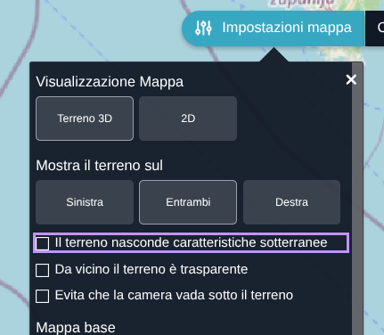
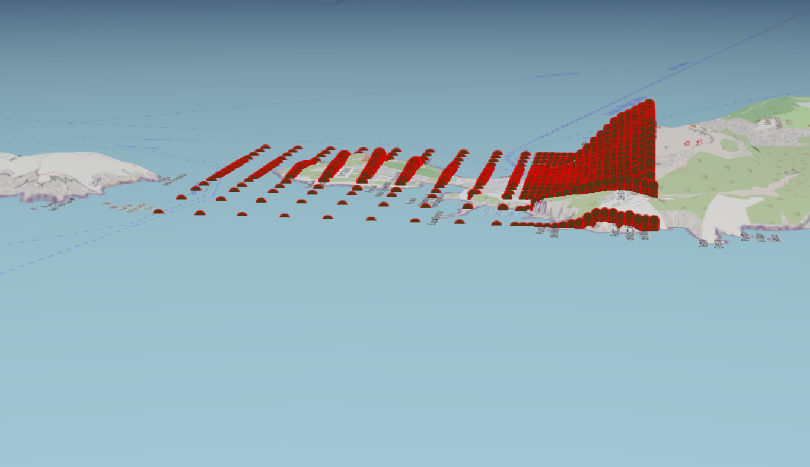
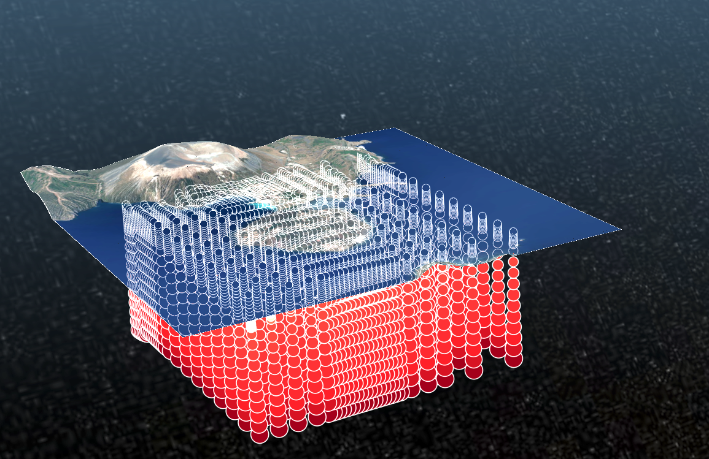
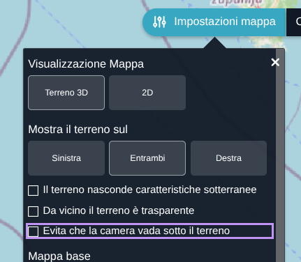
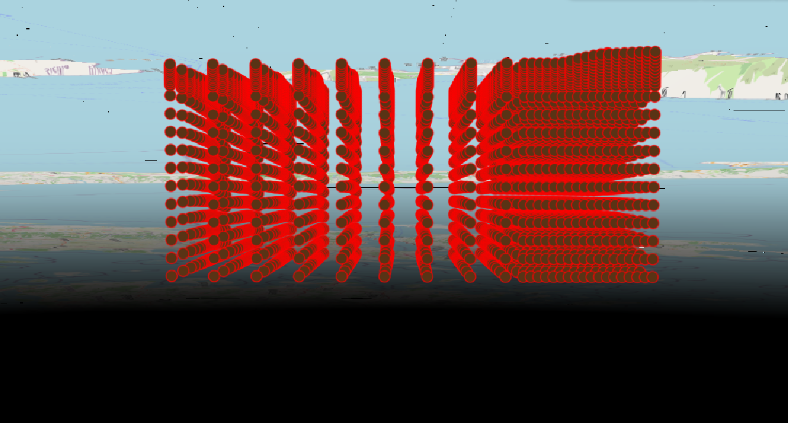
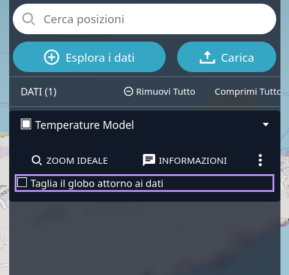
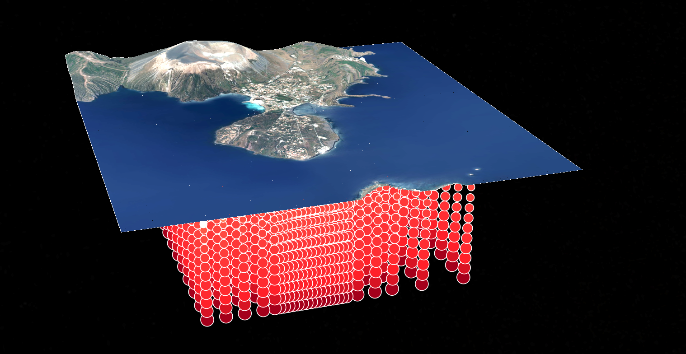
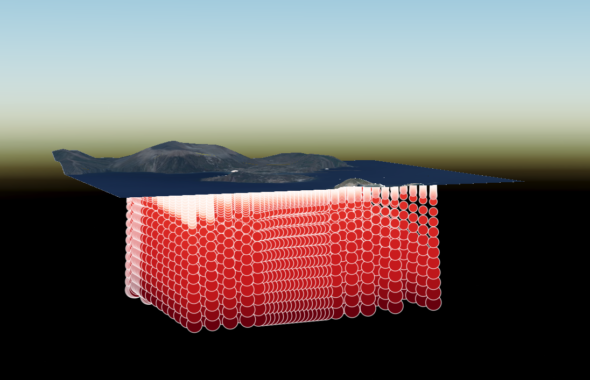

Gli strumenti di gestione della visibilità del terreno sono funzionalità avanzate del Geoportale che consentono di controllare il modo in cui il globo, il terreno e gli oggetti dei layer vengono visualizzati nella scena 3D.
Queste opzioni permettono di adattare la resa della mappa al contesto di utilizzo nella modalità 3D, migliorando la leggibilità della scena e rendendo più chiara l’interpretazione dei dati territoriali.
Le funzionalità disponibili sono:
La funzione Nascondi Caratteristiche Sotterranee è una funzionalità avanzata del Geoportale che consente di nascondere gli oggetti presenti sotto il terreno.
Quando è attiva, gli elementi localizzati al di sotto della superficie non vengono visualizzati, così da rendere la scena più pulita e leggibile. Questa opzione è utile quando si vuole dare priorità visiva al terreno oppure quando si desidera evitare che contenuti interrati o parzialmente coperti interferiscano con la lettura del layer.
Per utilizzare la funzione Nascondi Caratteristiche Sotterranee è necessario attivare il relativo controllo nel pannello Impostazioni Mappa.

Quando la funzione è attiva:

Nascondi Caratteristiche Sotterranee è utile per:
La funzione Trasparenza del Terreno consente di rendere il globo progressivamente trasparente in funzione della distanza della camera.
La trasparenza non cambia in modo brusco, ma viene interpolata tra un valore vicino e un valore lontano, così da ottenere una transizione graduale durante la navigazione. Questa opzione è utile quando si vuole mantenere visibile il contesto territoriale senza coprire completamente gli oggetti sovrapposti al terreno.
Per utilizzare la funzione Trasparenza del Terreno è necessario attivare il relativo controllo nel pannello Impostazioni Mappa.
Quando la funzione è attiva:
In questo modo la transizione resta fluida e leggibile anche durante lo zoom o la rotazione della scena.

Trasparenza del Terreno è utile per:
La funzione Controllo Collisioni gestisce la collisione della camera con il terreno.
Quando è attiva, la camera non può attraversare la superficie del terreno. Quando è disattivata, aumentare lo zoom permette alla camera di scendere sotto il livello del terreno. Questa opzione consente di controllare il comportamento della navigazione 3D al variare dello zoom ed evitare movimenti indesiderati sotto la superficie.
Per utilizzare la funzione Controllo Collisioni è necessario attivare il relativo controllo nel pannello Impostazioni Mappa.

Quando il controllo è visibile, l’utente può scegliere tra due modalità:
Quando la funzione è disattivata, la camera può passare attraverso il terreno visualizzando anche elementi posti nel sottosuolo.

Controllo Collisioni è utile per:
La funzione Taglio del Globo consente di ritagliare il globo in base all’estensione dei dati visualizzati.
In questo modo viene mostrata soltanto l’area utile del layer, mentre il terreno esterno al riquadro dei dati viene tagliato. Questa opzione è utile quando si vuole concentrare la visualizzazione sull’area di interesse e ridurre gli elementi di sfondo non necessari.
Per utilizzare la funzione Taglio del Globo è necessario attivare il relativo controllo dedicato al taglio del globo nel dato di catalogo presente nella workbench.

Quando la funzione è attiva:


Taglio del Globo è utile per: